Power Apps
Construção de aplicativos para facilitação de operações complexas e manuais e otimização de fluxos.
PORTFÓLIO PROFISSIONAL
Projetos para otimização, performance, análise, e automação de processos.
Desenvolvimento de soluções para transformar processos manuais em fluxos mais organizados, automatizados e orientados por dados.
01 / SOBRE
Minha experiência combina comunicação, análise e tecnologia. Recentemente em minha atuação profissional, passei a assumir iniciativas que vão além do suporte operacional e envolvem a construção de soluções para problemas reais da área.
A partir de processos como gerenciamento de estoques, fluxos de edição de imagens, relatórios e demandas recorrentes que consumiam tempo, comecei a estruturar aplicações, dashboards e automações para centralizar informações e reduzir atividades manuais.
Hoje, meu foco está em utilizar ferramentas como Power Apps, Power Automate, Power BI, Power Query, Excel, integrações via SharePoint e Python para transformar necessidades do negócio em soluções práticas.
02 / Ferramentas
Construção de aplicativos para facilitação de operações complexas e manuais e otimização de fluxos.
Automação de tarefas manuais, integrações com Power Apps, Sharepoint e Python e atualização de bases.
Dashboards, indicadores, relacionamentos, modelagens e tratamento de dados.
Automação com edições em massa, incluindo experimentos com tratamento automatizado de imagens.
03 / PROJETOS
Uma seleção dos meus melhores trabalhos desenvolvidos ou estruturados durante minha experiência profissional.
Sistema desenvolvido para registrar atualizações, movimentações de brindes através de um, ou mais de um banco de dados do Sharepoint. O sistema é fundamental para unificar a operação de processos de itens e alimentação automática de listas do Sharepoint no Power BI.
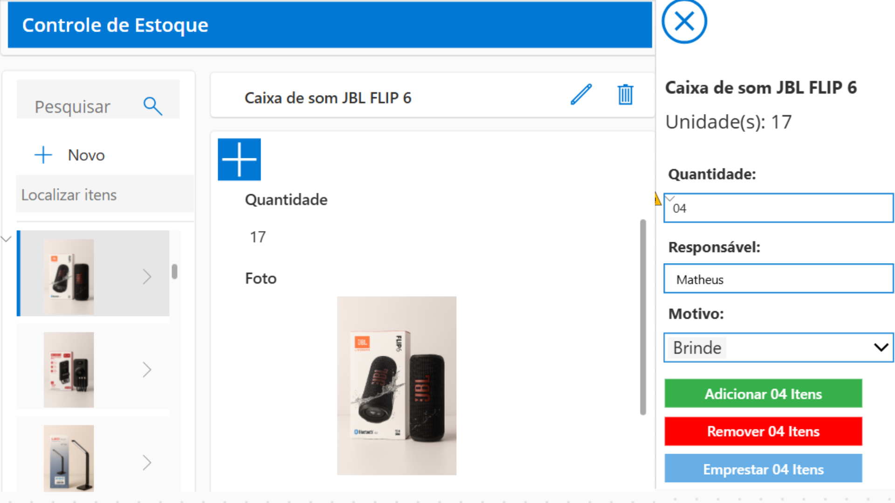
Sistema desenvolvido para inserção de fotos de novos colaboradores, contendo login e demais informações.
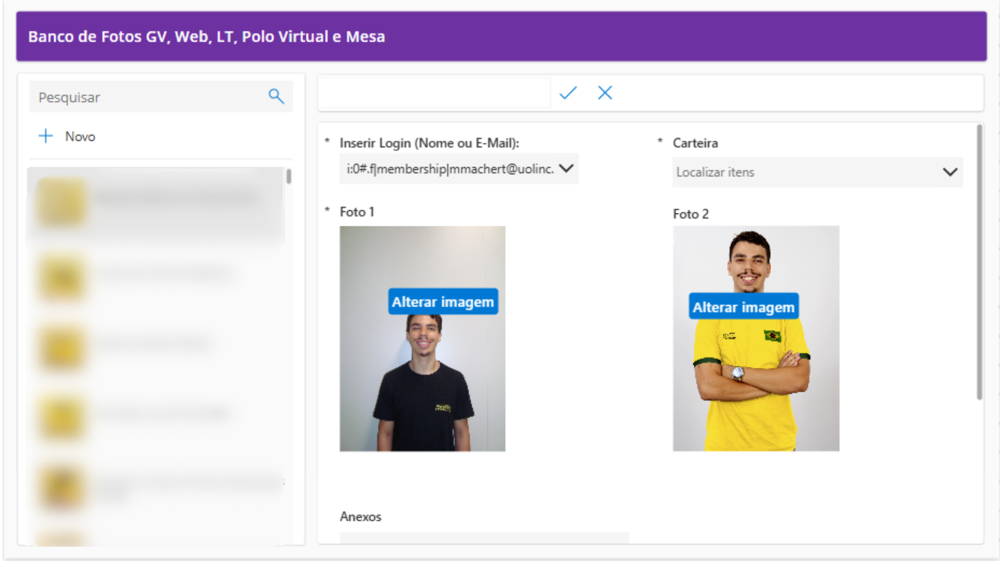
Sistema integrado para organizar o recebimento, processamento e disponibilização das fotos editadas dos novos colaboradores, conectando interface, Power Automate e processamento em Python. Uma vez que o aplicativo de cima foi feito para envio das fotos, este foi feito para aprovação e envio via outlook das fotos já tratadas e editadas.
Dashboard desenvolvido para consolidar informações de registros de itens, movimentações de estoque e transformar os registros operacionais em uma visualização mais clara para acompanhamento.
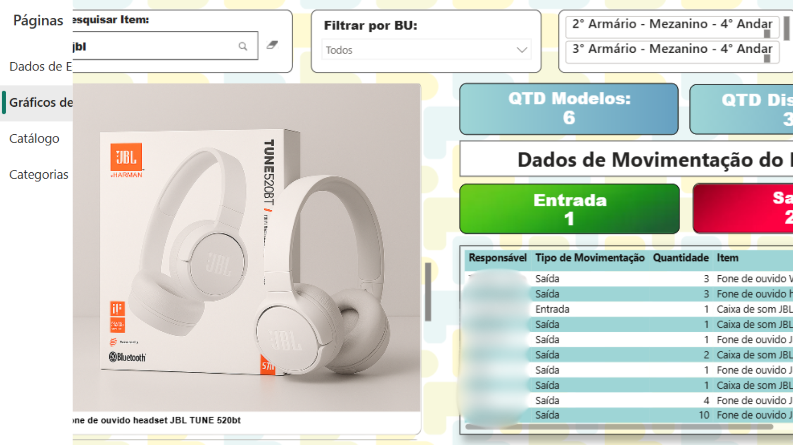
Dashboard estruturado para acompanhar orçamento e requisições de custo, reunindo informações de diferentes bases Excel e Sharepoint em uma visão centralizada.
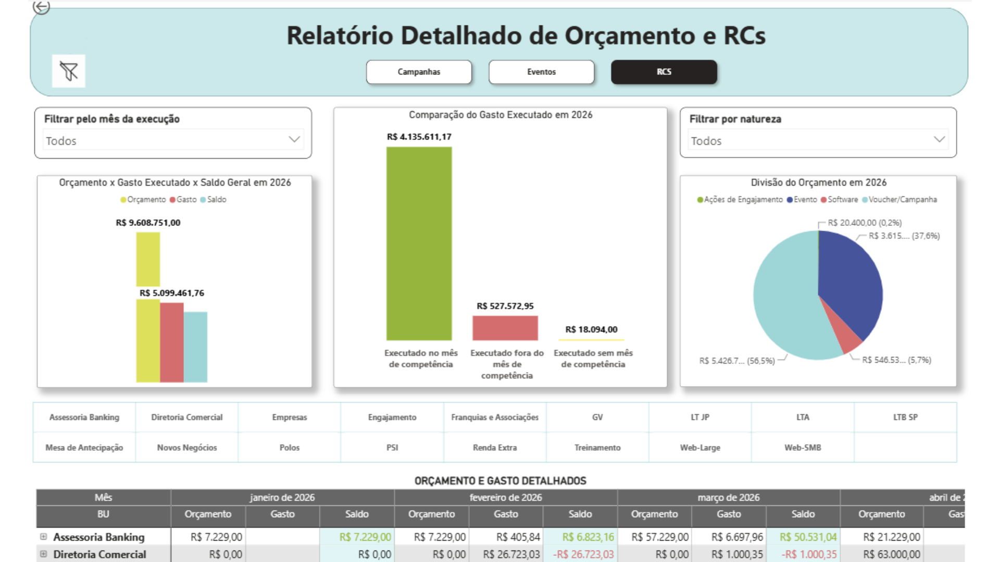
Dashboard criado para acompanhar a qualidade e o comportamento das casos internos recebidos em uma caixa de email compartilhada.
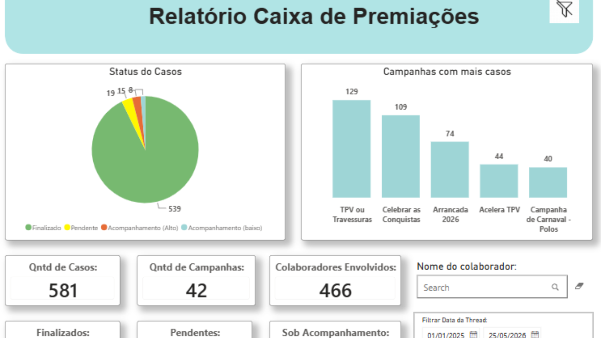
Dashboard alimentado por dados da API 2clix para acompanhar indicadores de monitoria e qualidade, transformando dados da operação em informações para análise.
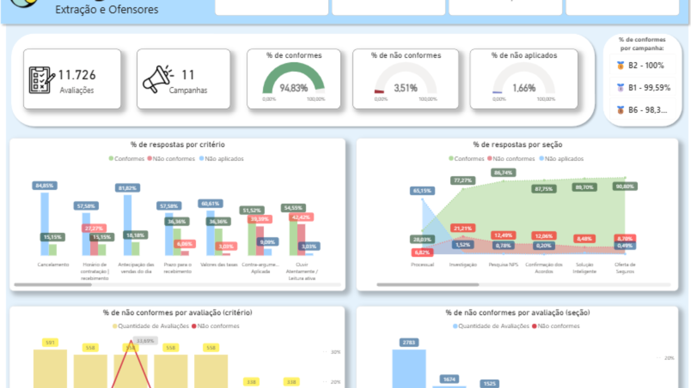
Automação criada para utilizar informações recebidas em Excel na atualização de uma lista do SharePoint, excluindo e inserindo milhares de itens automaticamente a cada Excel recebido.
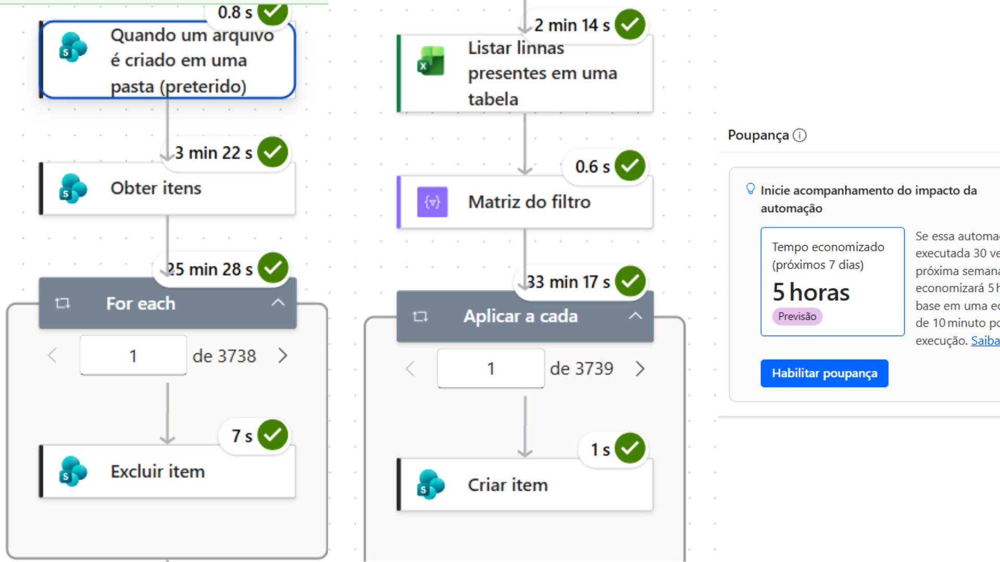
Automação para transformar informações de uma base em comunicações personalizadas e lembretes enviados automaticamente ou de forma programada pelo Microsoft Teams.
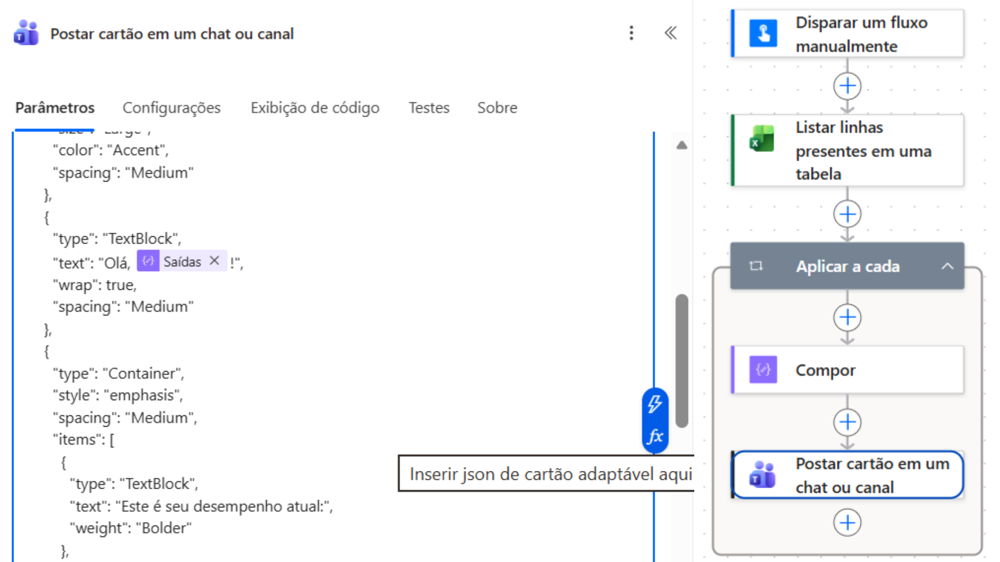
Automação desenvolvida para disparar anexos e imagens personalizadas atendendo a diversas condições a partir de informações estruturadas e comparações de matrizes, reduzindo a necessidade de criação e envio manual.
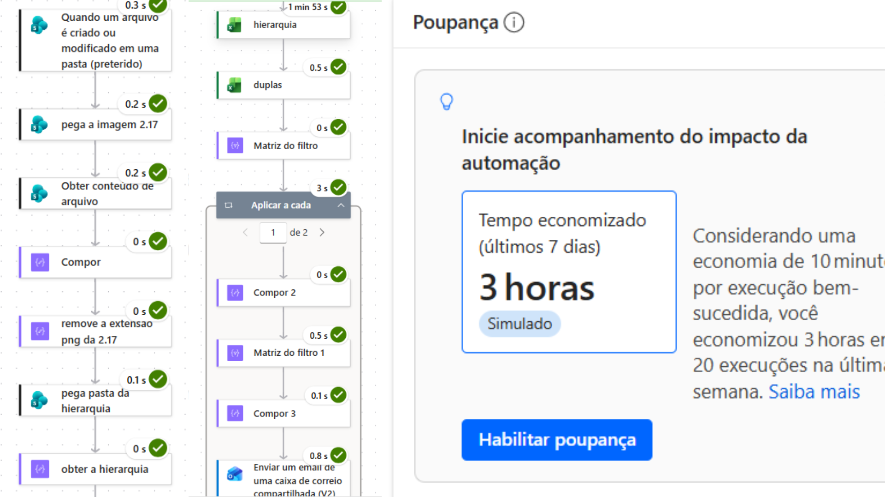
Automação para interpretar informações recebidas de documentos (NF e FAT) por email e atualizar/anexar dados em uma estrutura do Microsoft Lists, centralizando o processo e utilizando AI Builder para leitura de documentos.
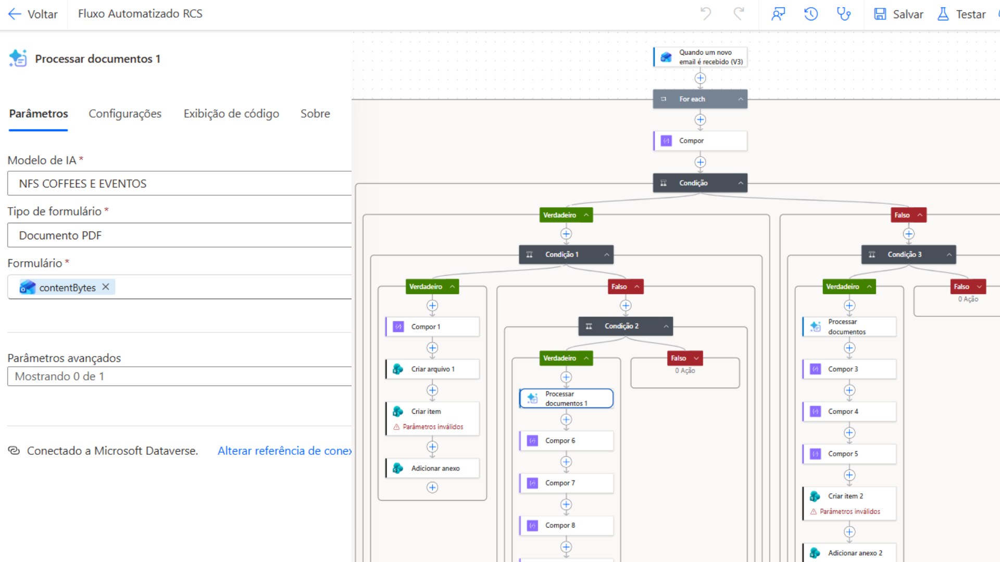
Sistema desenvolvido para automatizar o tratamento de grandes volumes de fotografias corporativas, seguindo padrões de rembg, blur, cores e sombras, reduzindo etapas manuais no processo de edição. Foi construído como base de processamento para o sistema em Power Apps - Power Automate.
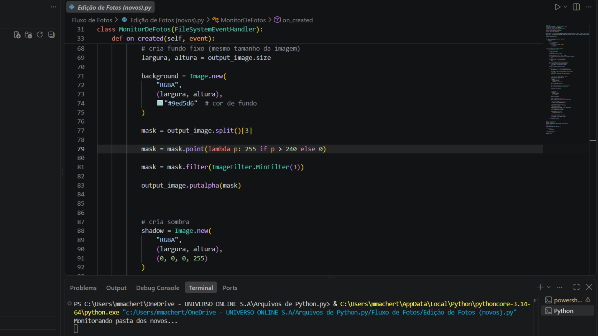
Automação em Python para processar apresentações e extrair slides em escala, renomeando e fazendo upload dos slides de acordo com seus títulos.
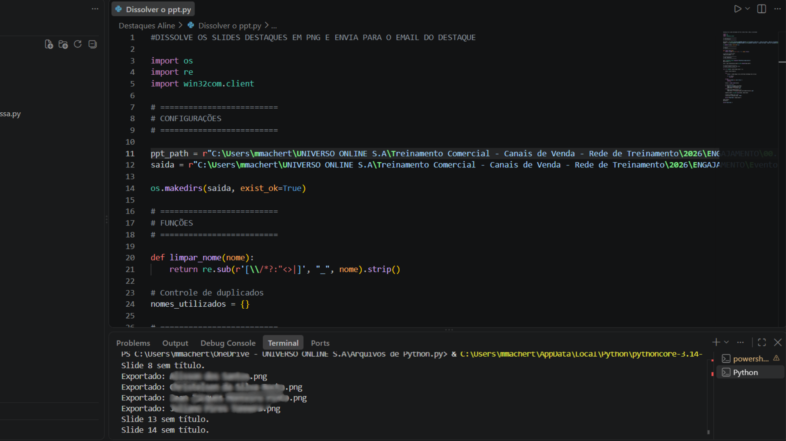
Automação criada para realizar alterações padronizadas em grandes volumes de informações utilizadas na produção de invites, personalizando de acordo com nomes em um banco de dados, reduzindo a edição manual.
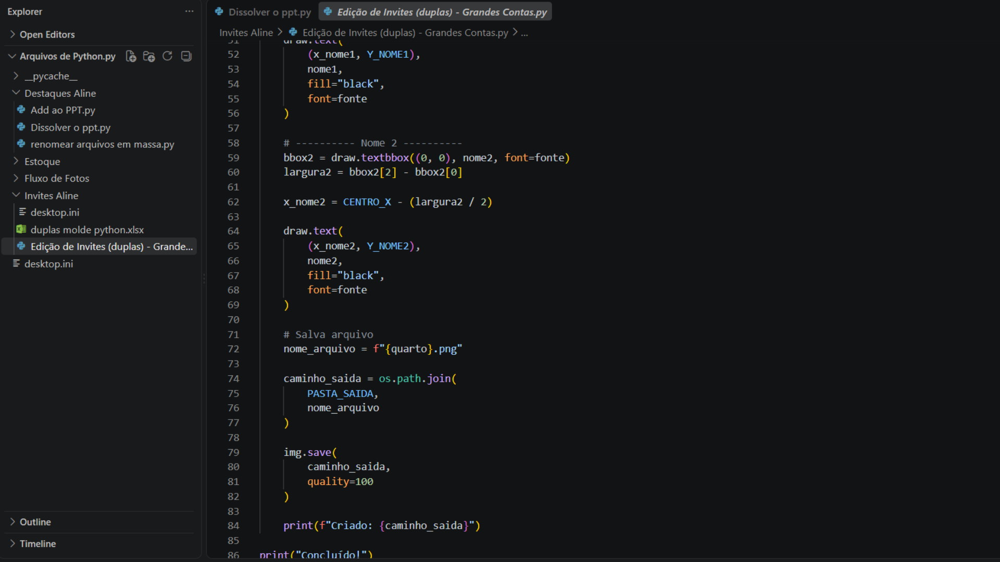
Estruturação de um chatbot para facilitar consultas e interações dentro do Microsoft Teams, utilizando informações organizadas no ambiente corporativo.
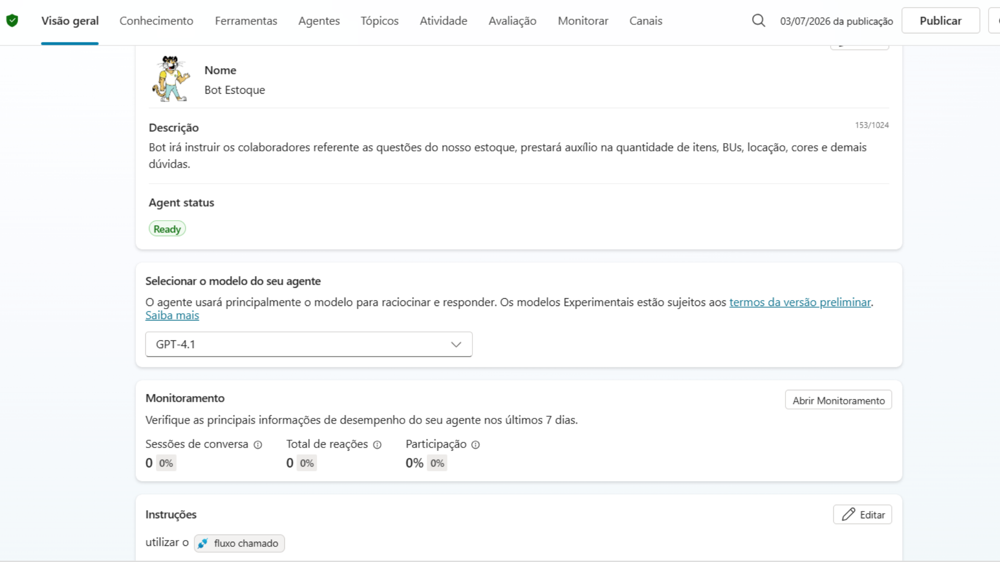
Desenvolvimento de agente integrado ao Power Automate e a informações internas, automatizando respostas para colaboradores em uma caixa de email.

04 / CONTATO
Neste portfólio, compartilhei meus trabalhos e projetos mais importantes desta minha trajetória profissional, agradeço pela sua atenção.
Estou disponível para novas oportunidades, projetos e conexões profissionais.